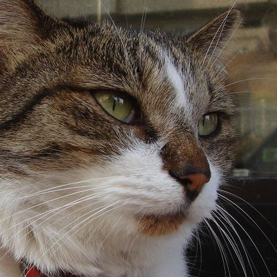

Главная

···
Чтобы снизить риск развития болезни Альцгеймера, нужна когнитивная тренировка. Помимо различных
хобби и головоломок советуют не зацикливаться на повторном просмотре фильмов, использовании
одних и
тех же маршрутов, на прослушивании одних и тех же песен.

27
1,1 тыс.
16,4 тыс.
···
Простите я обязана этим поделиться. Я только что узнала что у Крутого пике есть последняя серия
Они там СЕЛИ
62
387